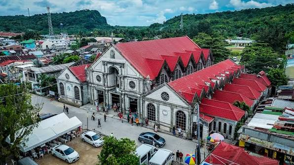

- Hebacong Sea of Clouds
- Wake up to a breathtaking sea of clouds and panoramic mountain views. This peaceful viewpoint is perfect for watching the sunrise and experiencing Eastern Samar's natural beauty.
- Calicoan Island
- Famous for its white-sand beaches, crystal-clear waters, and world-class surfing waves, Calicoan Island is a paradise for beach lovers and adventure seekers alike.
- Sulangan Church
- Also known as the Our Lady of the Immaculate Conception Parish, this centuries-old church is a cherished pilgrimage site that reflects the province's rich history and deep Catholic faith.